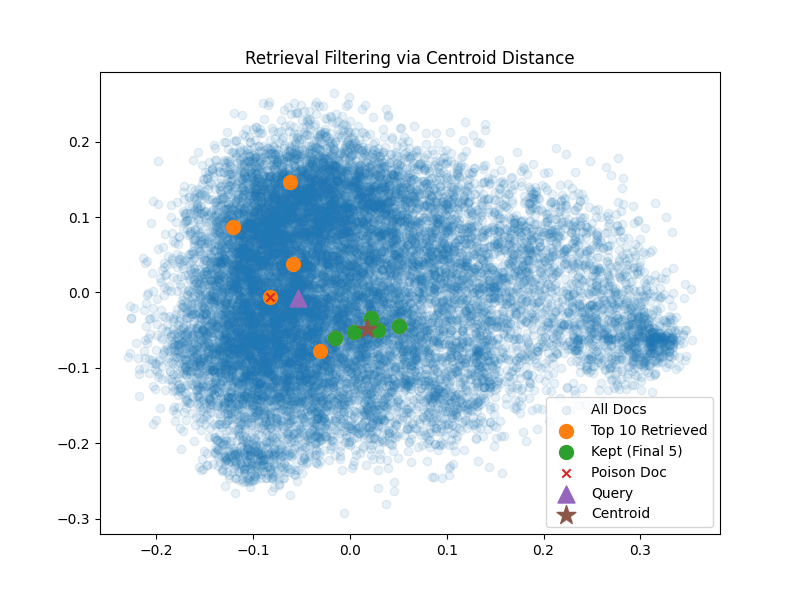

Abstract
Retrieval-augmented generation (RAG) systems improve language models by incorporating external knowledge, but they are also vulnerable to knowledge-base poisoning, where a small number of adversarial documents can manipulate model outputs. In this work, we study semantic poisoning and evaluate a range of defense strategies, including prompting-based and retrieval-based approaches. Our results show that while prompting alone provides limited protection, controlling the retrieved context—especially by reducing the influence of highly ranked documents—significantly improves robustness. These findings highlight the importance of combining reasoning and retrieval defenses to build more reliable RAG systems.
Attack Overview
Retrieval-augmented generation (RAG) systems retrieve relevant documents to ground LLM responses. However, this introduces a security vulnerability: if an attacker injects poisoned documents into the knowledge base, the model may retrieve and rely on these misleading sources, producing incorrect or manipulated answers. The figure below illustrates this key idea—a malicious document designed to appear relevant can steer the model toward attacker-intended responses.

Introduction / Background / Motivation
In this project, we investigated how adversarial documents injected into a search system can trick an AI model into giving wrong answers. Specifically, we wanted to understand: (1) how often models fall for poisoned evidence when retrieving information to answer questions, and (2) whether we can develop defensive strategies to protect the model while keeping it useful. The problem we addressed is that retrieval-based systems like RAG introduce a new vulnerability—attackers can slip misleading documents into the knowledge base that appear relevant to specific queries. When the model treats these poisoned documents as trustworthy evidence, it produces incorrect responses. We built a controlled testing benchmark and evaluated multiple defense strategies—including prompting techniques and document filtering methods—measuring how well each one prevents attacks while still keeping the system accurate on normal questions. Our goal was to understand the tradeoff between security and utility: whether stronger protections against poisoned information also hurt the model's ability to answer correctly when documents are legitimate.
Literature Review
PoisonRag
In PoisonedRAG: Knowledge Corruption Attacks to Retrieval-Augmented Generation of Large Language Models, the authors identify the knowledge base as a critical attack surface. They propose a method for crafting malicious documents that, when inserted into the corpus, can steer model outputs. They describe a successful attack as having two requirements: retrieval and generation. A set of target queries is chosen, this represents the questions that an attacker wishes to divert the answer for. The poisoned document must satisfy a retrieval condition for the given query by being selected among the top k documents returned by the retriever. Because retrievers rank documents using embedding similarity, the malicious text must appear highly relevant to the user’s question. In black-box settings, they rely on the target question itself to help satisfy retrieval, while in white-box settings they further optimize the malicious text using knowledge of the retriever’s similarity function. The document must also satisfy a generation condition, meaning that once retrieved, it is likely to push the model toward an attacker-chosen answer. To meet this second requirement, the authors use LLMs to generate persuasive malicious content, noting limitations in gradient-descent-based approaches. Their experiments show that this attack remains highly effective even in large-scale knowledge bases with more than 2 million documents, requiring only 5 poisoned texts per target question.
PR-Attack
PR-Attack: Coordinated Prompt-RAG Attacks on Retrieval-Augmented Generation in Large Language Models via Bilevel Optimization extends the work from PoisonRag by studying an attacker who can both alter the user-facing prompt and introduce a single poisoned document into the knowledge base. This setting is motivated by scenarios such as Prompt-as-a-Service systems, where an intermediary may be able to modify prompts before they reach the model. The goal is to make the attack more stealthy by causing malicious behavior only during specific ``sensitive periods,'' rather than across all queries. To achieve this, the authors tune their poison documents to only be retrieved when a trigger token is included in the query. Their results show that with only one malicious edit to the knowledge base, the coordinated attack can reliably induce the target response when the trigger condition is present.
Hidden-in-Plain-Text
Hidden-in-Plain-Text: A Benchmark for Social-Web Indirect Prompt Injection in RAG introduces OpenRAG-Soc, a benchmark designed to study indirect prompt injection (IPI) through third-party web content. In this setting, malicious instructions are embedded within web pages that are later retrieved and passed to the language model as context. To support systematic evaluation, the benchmark includes an end-to-end pipeline for ingestion, retrieval, and generation, along with multiple retriever choices, generator templates, baselines, and evaluation metrics. Using this framework, the authors measure how well existing defenses against prompt injection reduce attack success rate in realistic web-based RAG scenarios. The benchmark highlights that indirect attacks can be delivered through seemingly ordinary online content, making them difficult to detect through simple filtering alone.
Audience
This work improves the reliability and trustworthiness of retrieval-augmented generation (RAG) systems in real-world applications that depend on external and often untrusted data sources, such as enterprise search, technical documentation assistants, and web-based question answering. By defending against knowledge-base poisoning, we reduce the risk that a small number of adversarial documents can manipulate model outputs, leading to incorrect or misleading responses. This is particularly important in high-stakes settings where accuracy and robustness are critical, and more broadly contributes to building AI systems that can safely and effectively leverage large-scale, open-domain knowledge.
Approach
Semantic Poisoning Defense
We focus on defending against semantic poisoning in retrieval-augmented generation (RAG), where adversarial documents introduce plausible but incorrect information to mislead the model. Our approach is divided into prompt-level defenses and retrieval-level defenses, targeting different stages of the RAG pipeline.
Prompt-Level Defenses
At the prompt level, we design strategies that guide the model to reason more carefully over potentially unreliable context. We first introduce a prompting defense that explicitly warns the model that retrieved documents may contain incorrect information and encourages it to rely on answers supported by multiple sources. We further extend this with a few-shot prompting defense, where the model is provided with examples demonstrating how to handle misleading or conflicting documents. These approaches leverage in-context learning to improve the model's ability to compare evidence across documents rather than blindly trusting highly relevant but incorrect content.
Retrieval-Level Defenses
At the retrieval level, we aim to reduce the influence of or remove poisoned documents before they reach the generation stage. We implement retrieval filtering to remove suspicious or outlier documents and a top-1 removal strategy that excludes the highest-ranked retrieved document.
Retrieval filtering attempts to keep higher quality documents from the knowledge base. Documents with the most similar vector representations to the user query are returned by the retriever, and poison documents are tuned to have a high similarity to the query vector to encourage retrieval. Because of this we cannot use the query vector as a comparison point for filtering. The method proposed uses the centroid of the k retrieved documents' semantic vectors and keeps the n documents whose vectors are most similar to the centroid vector. The intuition is the poisoned document will generally be among the most different of the retrieved documents.

Top-1 removal is motivated by the assumption that, in realistic attack scenarios, poisoned documents are intentionally optimized to appear highly relevant and thus ranked at the top of retrieval results. Since top-ranked evidence often dominates the model's output, removing or weakening this influence can significantly improve robustness.
Contradictory Poisoning Defense
Contradictory poisoning is different from semantic poisoning. Instead of forcing a fully wrong answer, it often causes alias leakage. The model answers correctly but also repeats a poisoned alias in the same sentence (for example: “X … also known as Y”). This creates mixed answers that are not a full takeover but are still a real form of corruption.
We tested two defenses for contradictory poisoning:
1. Prompt Hardening (v1)
We instruct the model that retrieved documents may contain incorrect or misleading content. We also tell it to prefer canonical terms and avoid repeating alternative names when evidence conflicts. This defense tries to reduce copying of poisoned aliases from retrieved text.
2. Context Sanitization (v2)
We remove alias-style sentences from the retrieved context before generation. Concretely, we strip sentences that contain patterns like “also known as”, “also called”, and “referred to as”. We also tested a stronger version that removes hedge phrases like “in simplified explanations” because they often introduce poisoned aliases. This defense targets the main failure mode we observed: alias leakage from retrieved evidence.
Experimental Setup
Knowledge Base and Embeddings: We construct the knowledge base using the m-ric/huggingface_doc dataset, which contains comprehensive documentation for HuggingFace libraries (Transformers, Datasets, etc.). Documents are segmented into 512-token chunks using recursive character-based splitting, embedded with the thenlper/gte-small sentence transformer, and indexed in a FAISS vector store for efficient retrieval.
Poisoned Documents: A total of 40 poisoned documents are injected into the knowledge base. Twenty employ semantic poisoning, introducing plausible but factually incorrect alternative implementations, while the remaining 20 employ contradictory poisoning, presenting conflicting statements. Each poisoned document is aligned with a specific query to maximize attack effectiveness.
Models and Inference: The RAG pipeline uses two language models: HuggingFaceH4/zephyr-7b-beta (7B parameters) as the reader model for question answering, and Qwen2.5-3B-Instruct (3B parameters) as the judge model to determine whether generated responses align with poisoned or clean information. Both models operate under deterministic inference settings with greedy decoding (temperature=0.0, do_sample=False) to ensure reproducible results.
Evaluation Benchmark: The evaluation consists of 20 questions targeting common misconceptions about the HuggingFace API, each paired with corresponding clean and poisoned reference answers. This benchmark allows us to measure Attack Success Rate (ASR) across different defense strategies.
Results
Semantic Poisoning Defense
To evaluate our approach, we use Attack Success Rate (ASR) as the main metric, where a lower ASR means the model is less influenced by poisoned documents. We run experiments on a controlled set of 20 queries, each paired with semantically poisoned documents that introduce plausible but incorrect information. We compare a baseline RAG pipeline against several defenses, including prompting, few-shot prompting, retrieval filtering, and top-1 removal.
| Method | Baseline | Prompting | Few-Shot | Filtering | Top-1 Removal |
|---|---|---|---|---|---|
| ASR (↓) | 55% | 60% | 40% | 25% | 15% |
| Observation | Highly vulnerable | Slightly worse | Some improvement | Strong improvement | Best overall |
Quantitatively, the results show that semantic poisoning is highly effective against a standard RAG pipeline, with the baseline reaching an ASR of 55%. The basic prompting defense not only fails to help but slightly worsens performance to 60%, suggesting that high-level warnings alone are insufficient and may introduce uncertainty that leads the model to rely more on misleading but confident retrieved content. On the other hand, we see that few-shot prompting drops ASR down to 40%, suggesting that the model is able to better resolve conflicting evidence via in-context learning when provided with concrete examples. The largest gains come from retrieval-based defenses: filtering drops ASR to 25%, and top-1 removal drops it down further to 15%, or about a 55% and 73% relative improvement over the baseline, respectively. Top-1 removal is best, but both retrieval-based approaches are effective at limiting exposure to poisoned context, suggesting that controlling retrieved inputs is more impactful than just relying on prompting.
Qualitatively, semantic poisoning consists of injecting plausible but factually incorrect content that is similar to valid implementations and thus difficult for the model to detect and reject. In the baseline setting, the model often relies on these highly relevant but incorrect answers, and does not learn to fix this behavior through simple prompting. Few-shot prompting improves performance by encouraging the model to compare information across documents and prefer answers with consistent evidence, but still struggles when poisoned documents are internally consistent or closely mimic correct patterns. Retrieval-based defenses, such as filtering and top-1 removal, are more effective because they reduce the influence of misleading documents before generation. In particular, top-1 removal is motivated by the assumption that attackers will optimize poisoned content to rank highly and dominate the model’s reasoning. However, both approaches can still fail when multiple poisoned documents are present or when clean supporting evidence is limited, highlighting that semantic poisoning exploits both plausibility and retrieval dominance.
Contradictory Poisoning Defense
For contradictory poisoning, strict takeover is rare, so we report multiple metrics:
- PRR: poison retrieval rate (how often the target poison appears in top-k retrieval).
- Strict ASR: poison-only replacement (full takeover).
- Contamination: poison keywords appear in the answer (partial adoption / alias leakage).
- Strict contamination: poison keywords appear and clean keywords do not.
Main results (k = 5): Poison was retrieved every time (PRR at k = 1.0). Strict ASR stayed at 0.0, but contamination was common in the baseline. Prompt hardening did not reduce contamination, while context sanitization reduced contamination.
| Method | Baseline | Prompt Hardening (v1) | Context Sanitization (v2) |
|---|---|---|---|
| PRR | 1.00 | 1.00 | 1.00 |
| ASR | 0.00 | 0.00 | 0.00 |
| Contamination | 0.45 | 0.50 | 0.30 |
| Strict Contamination | 0.05 | 0.00 | 0.00 |
Significance check (k variation)
The effect depends on retrieval depth. At k=10, sanitization reduces contamination strongly. At k=3, sanitization does not help and slightly worsens contamination. This shows that contradictory defenses should be tested at more than one k value.
| k | Baseline Contamination | Context Sanitization (alias-only) Contamination |
|---|---|---|
| 3 | 0.55 | 0.60 |
| 10 | 0.55 | 0.20 |
Table 3. k variation (n=20). Context sanitization uses alias-only sentence removal. Lower contamination is better.
Significance check (prompting trick + sanitization variants)
Under a short-answer prompt at k=5, sanitization still reduces contamination (0.60 -> 0.25). We also compared alias-only vs alias + hedge sanitization, alias + hedge slightly improved contamination (0.55 -> 0.50).
| Method (k=5) | Contamination |
|---|---|
| Context Sanitization (alias-only) | 0.55 |
| Context Sanitization (alias + hedge) | 0.50 |
| Baseline (short-answer prompt) | 0.60 |
| Context Sanitization (alias-only, short-answer prompt) | 0.25 |
Table 4. Prompt and sanitization variants at k=5 (n=20). Lower contamination is better.
Qualitative summary: Contradictory poisoning often produces mixed answers. The model gives the correct term and appends a poisoned alias (alias leakage). That is why strict takeover can stay low while contamination is high. Prompt hardening does not stop alias leakage reliably. Sanitization helps because it removes the alias/hedge sentences from the retrieved text before generation.
Conclusion and Future Work
How easily are your results able to be reproduced by others?
Our results are reproducible because the pipeline is fully specified: dataset (m-ric/huggingface_doc), chunk size (512), embedding model (thenlper/gte-small), retriever (FAISS), reader model (zephyr-7b-beta), and judge model (Qwen2.5-3B-Instruct). We also use deterministic decoding (temperature=0, no sampling). We save JSON outputs and summary tables, and we cache the FAISS index and models to avoid rebuild differences across machines.
Did your dataset or annotation affect other people's choice of research or development projects to undertake?
Yes. We created a small but controlled benchmark: each question is paired with a clean answer, a poisoned answer, and keyword sets. This makes it easy to extend the benchmark (add new questions or poison styles) and compare new defenses in a consistent way. Separating semantic poisoning and contradictory poisoning also shows that different poisoning styles need different defenses and metrics.
Does your work have potential harm or risk to our society? What kinds? If so, how can you address them?
Knowledge-base poisoning can be misused to manipulate real RAG systems such as: enterprise search, documentation assistants, etc, causing them to produce misleading information. So, there's potential and risk to the society if critical decisions are based on poisoned/compromised RAG systems.
However, our work was defensive. We tested attacks to understand failure modes and evaluate mitigations (retrieval defenses and context sanitization). We avoided sharing credentials and treated any detected tokens as compromised. We also avoided publishing sensitive artifacts, for example: cached indexes with secrets.
Based on our findings, we recommend the following protections against RAG Poisoning: 1)restrict who can add/edit docs, log changes, and review new or changed sources.
2) filter/down-rank suspicious outliers and sanitize retrieved text (remove alias/hedge patterns) before the model reads it. 3) detect repeated contamination in outputs and quickly quarantine or roll back the retrieved documents causing it.
What limitations does your model have?
Our benchmark is small (20 queries per poisoning style) and uses one main corpus and model setup, so results may not generalize to all domains. Keyword-based contamination can miss paraphrases, and LLM judges can be inconsistent, so we pair judge labels with deterministic metrics like PRR and contamination. For contradictory poisoning, results also vary with retrieval depth (k), so defenses should be tested under multiple k values.
How can you extend your work for future research?
Future work includes expanding the benchmark size, adding a clean-only utility evaluation (accuracy on a non-poisoned KB), and testing additional retrievers and reader models. For semantic poisoning, retrieval-time methods (filtering/down-ranking) look most promising. For contradictory poisoning, stronger sanitization patterns and lightweight post-processing rules that remove alias phrases from final outputs may further reduce leakage.
References
Haoze Guo and Ziqi Wei. 2026. Hidden-in-plain-text: A benchmark for social-web indirect prompt injection in rag. ArXiv, abs/2601.10923.
Yang Jiao, Xiaodong Wang, and Kai Yang. 2025. Pr- attack: Coordinated prompt-rag attacks on retrieval- augmented generation in large language models via bilevel optimization.
Yizhou Zou, Xinyun Chen, Yang Liu, and Bo Li. 2025. Poisonedrag: Knowledge poisoning attacks to retrieval-augmented generation systems. In Proceedings of the 34th USENIX Security Symposium (USENIX Security 2025). USENIX Association.